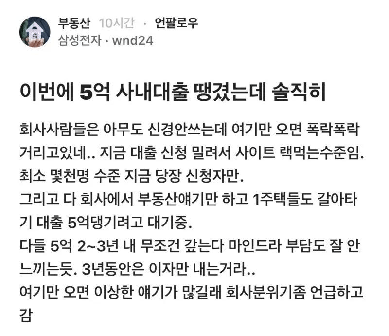

수도권 공급은 없고 전세는 씨가 말랐고 살만한 곳은 삼전 하닉형들이 매수하면
나는 ktx 타고다니면서 출퇴근 해야할듯
못탄 2030들은 어이가 털리는 상황이고
저점 맞추겠다고 욕심부린 40대들은 집주인이 집빼라는 말에 오열할듯..

수도권 공급은 없고 전세는 씨가 말랐고 살만한 곳은 삼전 하닉형들이 매수하면
나는 ktx 타고다니면서 출퇴근 해야할듯
못탄 2030들은 어이가 털리는 상황이고
저점 맞추겠다고 욕심부린 40대들은 집주인이 집빼라는 말에 오열할듯..
원숭이에게 차가 있고 자본이 있으면 이해력 있는 인간보다 낫다 하려나?
그렇게 생각한다면 진정한 천민이겠네.
그리고 마지막으로 말하는데, 지금 이 자본이라는 주제조차 이해 못하고 '자본주의 부정하는거네?' 하고 내뱉은 본인이 꺼냈어요.
동물이 차가있고 자본이 있으면 차와 자본이 없는 인간보다 그 분야에서는 전문성이 있을 수 있지 ㅇㅇ 그런 원숭이가 있냐고 근데 ㅋㅋ 존나 쓸데없는 소리하네
주식은 부동산보다 더한 악이라며? 이 두개를 묶는 공통점이 자본이라고 추론되지 않나?
아까도 말했잖아 그게 아니라면 니가 하고싶은 말을 다시 똑바로 해보라고 ㅋㅋ 뭐가 악이고 뭐가 선인지
아무것도 모르는 사람이 '나 이해했다, 아니 말해줘라, 나 이해했다, 아니 모르겠다' 하고 있는데 설명을 해달라?
그 사람은 설명을 요구하기 전에 부끄러움을 안느낄까?
안해도 된다니까? 다만 나한테는 그게 못하는 걸로 보일뿐 ㅋㅋㅋ
성적표 까보자는데 자꾸 숨기고 있으면 걔가 1등급이겠냐 9등급이겠냐
성적표를 까지 않아도 이미 훤히 수준이 보이니까.
ㅋㅋㅋㅋㅋㅋㅋ 돈없으니까 별 잡생각이 다들제???
타인의 성취를 악으로, 자신의 무능을 선으로 그만 딸딸이치고 현실좀 직시해라
아 부동산과 주식의 문제를 인식하는건 돈이 없는 사람만 가능한거구나
기관도 전문가도 그냥 돈이 없어서 그러는구나
뭐가 문제인지 세번쨰 묻는다 ㅋㅋㅋ
논제를 너만에 비밀로 감춰둘꺼면 처음부터 논쟁을 하지마ㅋㅋㅋㅋ
'20세기 중반까지의 자본주의도 자본주의였고
80년대 이후 자본주의도 자본주의인데
내가 이거 적어놓은거
알지도 못하고 이해도 못하지?'
<- 내 질문
'이해하는데? 그 이후 니가 못따라 오고있는거 같은데' <- 니 대답
도대체 뭘 이해하셨어요? 아주 잘 따라오다 못해 저보다 앞서가셨다면서요?
이해하셨다면서 또 설명해달라고 해요?
내가 이해한게 잘못됐다며 병신아 ㅋㅋ
뭐가 잘못된건지 니가 말을해보라고 장애년아 아오씹 ㅋㅋ
이해한게 잘못된 수준이 아니라 없는것 같은데 뭘 이야기할게 있을까요
기껏 말해줘도 허겁지겁 검색해와서는 '이거는?? 저거는???' 하기만 할텐데요.
토론이라는건 기본적으로 머릿속에 지식이 든 두 사람이 하는거에요
그게 '최소한의 입장료' 겠네요.
그래 결국 뜬구름잡는 소리만 할줄 알았다
뭘 아는게 있어야 얘길하지 ㅋㅋㅋ
입장료가 왜 필요한지 이제 알겠지?
입장료의 필요성을 직접 증명해주셨어요
안쓰럽누 ㅋㅋㅋㅋ 자본을 논하려면 자본부터 갖춰라
대충 댓글 막타치고 그만꺼져봐
병신같은 그지깽깽이새끼 상대하느라 고생이 많으십니다 형님.
사내 분위기 말고 계집 분위기도 알려주셈
삼전닉스에서 저런 혜택받는 직원들이 알마나 되겠냐 그냥 비싼집들 손바뀜 일어나는 거지
갈아타기 해도 어차피 지금까지 살던집이 또 매물로 나옴
그런집에 덜버는 사람들이 들어가는 거지
삼성 안다니는 내 인생 죽어!!!!
정부기조대로 양극화 극심해지고 있네
아~주 바람직해~
양극화 존나 심해지게 만듦 -> 하위계층 인구 많아짐 -> 하위계층에 퍼주기 정책 -> 표를 많이 받음 이건가?

근데.. 저 돈이 안풀리고 오너가 다먹으면 그게 더 양극화 심해진거 아님? 진짜 모름
오너가 어케먹누;;
주주도 안주던데 그럼 걍 기업이 물먹은 솜처럼 돈 쥐고만 있는겨...?
하급지여도 사길잘했다
망포부터 매교까지 수원 걍 2-3억이 한번에 올랐다 보면됨 광교는 대화 불가 정도임 이제 수원 집은 못산다 보면 됨
광교는 진짜 ㅋㅋㅋㅋ
나는 왜 돈이 없을까
부동산은 지금까지 떨어진적이 없었다
IMF
리먼사태
금방 전고점 회복하고 우상향으로 계속 간다는 소린데 리먼사태, imf 얘기하는 애들은 뭘까... 등락없는 자산이 어딨다고....
이러면 경기남부만 오르는게 아니라 그냥 서울부동산이 다같이 올라버림
경기남부에갔을 수요가 서울 서북부 동북부로 가거든
울집도 1년만에 3억오름
폭 등
하고싶은 말이 많지만 여기서 못하겠다 암튼 조온나 잘하는 짓이다 진짜 하 ㅋㅋㅋㅋㅋㅋㅋ 진짜 싫다 와..
만약 저 돈이 부동산이 아니라 주식으로 갔다면 주가부양도 되고 주주들도 행복할텐데
미국 401K 같이 주가부양 정책이 잘 발달했으면 부동산 몰려가서 집값 폭등시키는게 아니라 주식 폭등시켜서 모두가 만족하지 않았을까 함
삼전 반도체 지인피셜 : 대리 과장 이상급은 부동산 보러다니고 젊은 신입들은 모은돈 없고 첫 상여금은 신나게 쓰자 마인드라 (앞으로 몇년간 확정이라) 벤비아 넘어서 슈퍼카 롤스로이스 보러다닌다함.
상여요? ㅋㅋ
요새 집없으면 차가 아무리 좋아도 없어보이는 시대라 안그럼
일단 20-30은 집이 목표임 .
아예 집이 닿을 수 없는 사람들은 오히려 꽁똔 생기면 벤츠매장가고
그래도 살만한 사람들은 일단 모아서 사놓고 즐길 생각함.
뭐 일부는 슈퍼카 볼수도 있지 . 대부분은 안그럴듯
휴 난 집 있음
폭락한다고 생각할순 있지.
근데 본인이 정말 가지고 싶은거같은데
폭락할거라고 생각하는것은 이해못함.
답은 tqqq30년장투하고 은퇴할때 폭락이안오길기도하고 현금흐름이 끊길때 집하고 바꾸기뿐이다 집보다빨리오르는 자산을 선별해서 탑승하자
정부 기조대로 가는구나 경기도도 불보듯 뻔하쥬 영포티들 소리 질러 ~ ㅂㅅ들
이거는 자본이라는 토픽이 아니라 다른 무엇을 갖다대도 다 유효한거야
차도 없는 새끼가 껴들어서 현대가 좋니 도요타가 좋니 나대고 있는 꼴이라고 ㅋㅋ